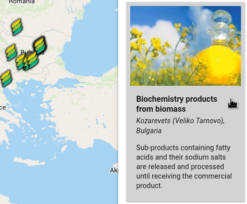
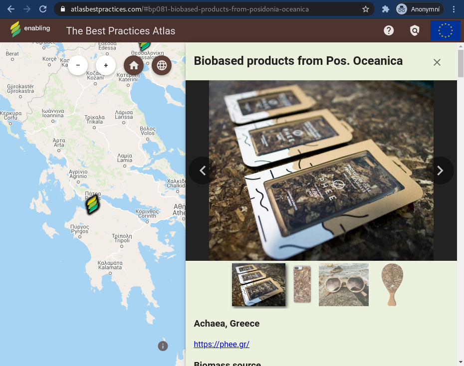

Choose how is the best practices list ordered by clicking the corresponding attribute. You can switch between ascending and descending order by clicking the same attribute again.
Use your mouse to select and deselect which countries you want the best practices displayed in. You can also select and unselect all countries with the corresponding button.
When you hover your mouse over a point in the map, the points name is displayed and highlighted both in the map and in the best practices list.
The same applies to the best practices list – hover over a best practice entry in the list and the corresponding point will be highlighted in the map. The name of the point will not be displayed in the map in this case.
When you click on a best practice in the map or in the list, the map will center on the point and the best practice details will be displayed. Each best practice can also be easily shared with a unique URL.
If there is more than one image, you can browse through them using the right and left arrow buttons or clicking one of the preview images below.
You can then close the detail with the "X" button in the upper right corner and the map will view will move to the previous position.
You can also change the map view using the "Default" and "Zoom to all features" buttons to change the map view to the initial extent and to quickly see all displayed features. Simple zoom buttons are also available.
You can close this help dialog by pressing the Esc key, clicking the "X" button at the top right corner or anywhere outside the dialog.
If you discover any mistakes, feel free to contact us at horak@wirelessinfo.cz